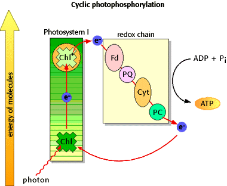

Photosynthesis Problem Set 1
Problem 7 Tutorial: Cyclic photophosphorylation
Which of the following does NOT happen in cyclic photophosphorylation?
A ATP is produced
B Photosystem I reaction center is active
C Electron transport occurs in the photosynthetic membranes
D Light energy is utilized
E NADPH is formed
Cyclic photophosphorylation
| Cyclic photophosphorylation requires photosystem I, but not photosystem II. Light-dependent electron transport occurs in the thylakoid membranes, where electrons follow a cyclic pathway, returning to the photosystem I reaction center. The energy of this electron transport results in a H+ gradient formation, the energy source for ATP synthesis. ATP is formed from ADP and Pi, but NADP+ is not reduced. |
 |
  
   
The Biology Project
University of Arizona
Thursday, October 3, 1996
Contact the Development Team
http://www.biology.arizona.edu
All contents copyright © 1996. All rights reserved.
|